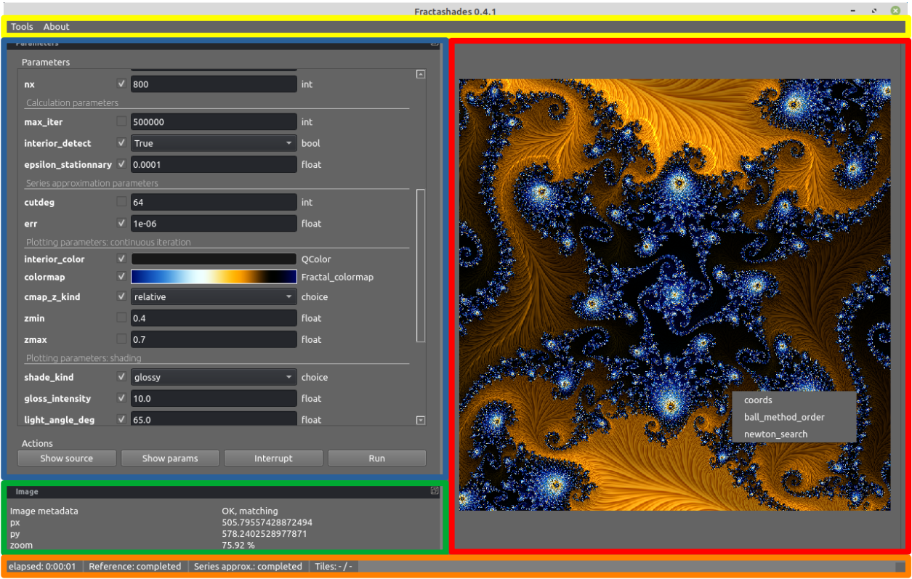

Getting started
Installing
Fractalshades is published on the Python Package Index (PyPI). To install the last published version and its dependencies, you should run: 1
pip install pip setuptools --upgrade
pip install fractalshades
(The first line ensures your installation tools stay up-to-date)
To install directly the latest version from Github master:
pip install git+https://github.com/GBillotey/Fractalshades.git
This package relies on the following dependencies:
They should install automatically with pip. A special case is gmpy2 as it needs the most recent versions of GMP, MPFR and MPC multi-precision arithmetic libraries. Under Windows 64 bits, the recent wheels of gmpy2 (rev >= 2.1.2) already ship the latest GMP / MPFR / MPC dll. Under Unix / Linux, if your distribution does not include them you will have to install them manually:
sudo apt-get install libgmp-dev
sudo apt-get install libmpfr-dev
sudo apt-get install libmpfi-dev
sudo apt-get install libmpc-dev
A 5-minutes guide to fractalshades
The best way to start is probably to have a look at the Gallery section. Download one of the examples from the GUI examples section (selection of links below), run it in an empty directory: good exploration !
python3 run_interactive.py
For advanced used you can also rely on batch mode, Fractalshades exposes 3 kinds of component each implementing a different functionality:
The core or calculation components runs under the hood all the calculations necessary for a plot and stores the intermediate raw results. This is typically done in a subclass of
fractalshades.Fractalbase class. The list of the available fractal models is found here : Fractal models.The plotting components will open the raw results and apply user-selected post-processing, to generate the image output. The base class for this part is
fractalshades.Fractal_plotter. Common post-processing routines are available, they are listed under the Postprocessing fields section.In order to explore a fractal and select a location, a graphical user interface is necessary. Fractalshades comes with a small yey flexible and user-configurable GUI based on PyQt5 framework.
Tip: A click on “show source” in the GUI will generate a python script ready-to-run in batch mode.
Graphical user interface
As explained above, the GUI is launched by running a python scipt from an interpretor. You should get something similar to :

The following main components can be seen:
in yellow, the main toolbar. The
toolssection provides:
A png tag reader, which can open an image created by fractalshades and output the list of parameters used for the computation (each image file produced by the programm is tagged with useful information like the location of the image, the program version, the calculation parameters used)
A png to colormap converter : load an image, draw a line on it : the colors will be used to create a colormap
A tool to select a colormap from the templates available (see Colormaps: available templates ) with combo-box and a preview of the colormap selected.
in blue, the parameters window. The used parameters and their types are parsed from the python script, and a tailored editor is proposed based on the type (see
fractalshades.gui.Fractal_GUIfor details). The editor might be a simple text box, or for more complex objects a full pop-up or a dockable window.
Among these, 4 parameters which define the zoom will respond to the mouse events on the fractal image panel (
x,y,xy_ratio, and the arbitrary precision in digitsdps).To view the scipt source code, click on “Show source”. This source code can be run directly in a python interpreter, it will calculate the same image in batch mode.
To view the current value of the parameters, click on “Show params”
To actually run the script, click on “run”.
On-going calculation can be also interrupted, this will become effective just after the current tile calculation is completed (allowing to display an intermediate result).
in red, the fractal image panel. It displays the last computed image (it is empty if no calculation has been run). It provides 3 kinds of user-interaction:
wheeling zooms / unzooms the static image
with a right-click you define a new zoom area that can be used for next calculation. (Double right clicking reset the zoom)
with a left-click, you can run some of the methods of the
fractalshades.Fractalobject (these are its methods tagged with a special decorator:@fractalshades.utils.interactive_options), the coordinates of the click will be passed. Current implementation of the deep zoom mandelbrot gives access to the coordinates, the cycle order, and a Newton search for nucleus.in green, the info panel. It gives the current mouse position and zoom level (from the image panel).
in orange, the status bar. It provides information on the calculation progress (full precision orbit, series approximation, current tile, …)
Finding areas of interest
For the standard precision fractals, it is usually sufficient to navigate manually inside the fractal through the GUI:
left click, draw the new zoom rectangle, left click again to validate ; the coordinates in the parameters panel are updated automatically
press “run”. A new calculation will be run taking into account the updated parameters
For arbitrary precision exploration however, zooming repetively inside a deep minibrot can be tedious. For deep zooms in the Burning ship, it is even not always obvious to find a miniship. This is where the Newton search for the center of hyperbolic components comes handy :
right click on the image close the the estimated location of a target minibrot, select “Newton search”
Some parameters are needed to estimate the period of the influencing minibrot:
maximum iteration (this should be more than the period, you can pick 100000 as a starting point as calculation is fast)
radius in pixel (this is the size of a small ball - or ellipse in the case of the Burning ship) that will be iterated until it contains the critical point : this is the computed period. Usually, just keep the proposed value of 3 pixels.
a result table should pop-up. If all went well (the period has been estimated, a Newton calculation has been run and converged successfully) you should be provided the following new information:
calculation dps the precision used for the successful Newton search. Copy paste it in the parameter panel to use it for the next zoom
x_nucleus, y_nucleus the coordinates of the hyperbolic component center. Copy-paste also as the requested new center for the next image
nucleus_size, julia_size these are the estimation of the size of the hyperbolic component, and of its area of influence (embedded Julia). Usually the next zoom should be close to the embedded Julia parameter, copy-paste it as the new
dxfor the non-holomorphic fractals (Burning-ship) you will get also 4 coordinate of the local skew transformation (skew_00, skew_01, skew_10, skew_11). Copy-paste in the parameter panel and set
has_skewtoTrue. (Each time the skew is modified the calculation need to be re-run to validate the choice, otherwise the screen coordinates will not match the view anymore). Not that this option is usuful also at low zoom level, some areas of the Burning ship are very skewed at a standard zoom levelpress “run”
For those interested in the implementation details we shall recommend the paper
quoted in fractalshades.models.Perturbation_burning_ship.
Unskewing streched areas
For the Burning ship and other non-holomorphic fractals, some areas are very
skewed and it is desirable to apply an “unskewing matrice” (a linear 2x2
transformation that keep the areas constant but changes the angles). These 4
coefficients (skew_00, skew_01, skew_10, skew_11) can be
provided in the GUI - for the arbitrary precision explorer, of passed to the
relevant zooming method in batch mode, e.g.,
fractalshades.models.Perturbation_burning_ship.zoom
Rather than a tedious manual iteration to define the 4 coefficients of this matrix, fractalshades provides 2 way to computationaly define a local skew transformation:
When computing the center of an hyperbolic component (right-click, “Newton search”, this matrice is one of the calculation results - if this center is found
For areas where the “Newton search” fails, a skew matrice can still be defined from an escaping pixel: right click on the screen close to the area of interest and select “quick skew estimate”. A window will pop-up with the 4 coordinates of the skew transformation (algorithm based on the iteration of an infinitesimal ellipse until escape).
Once a new local skew is entered, remember to set has_skew to True and
re-run the calculation.
The navigation can continue from here, the unskewing transformation will be
applied to both image rendering and mouse events.